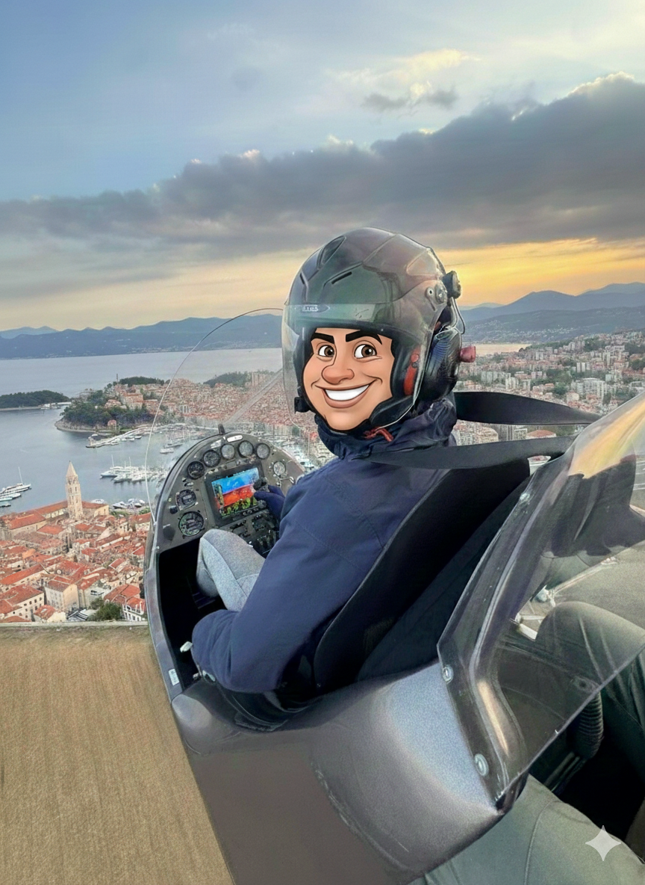
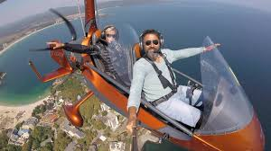
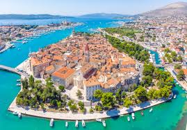
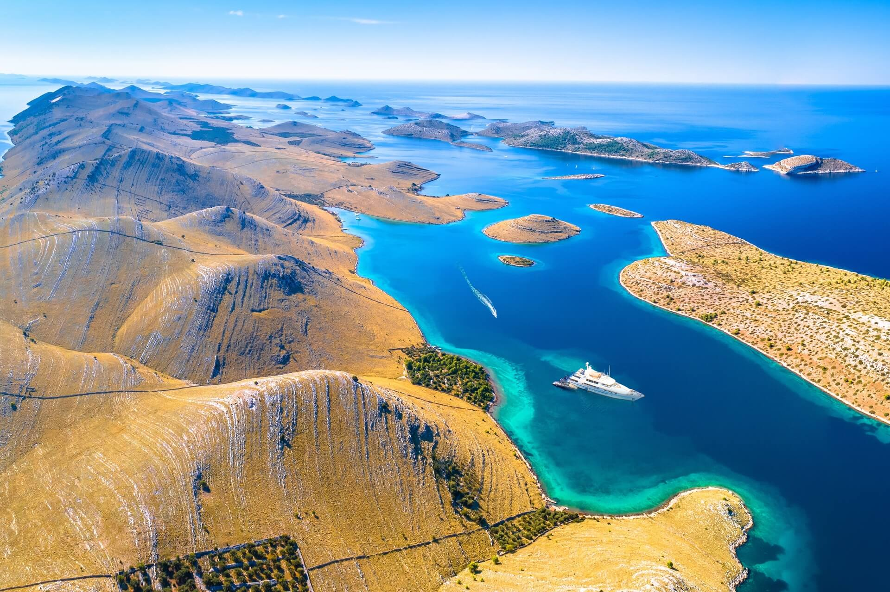
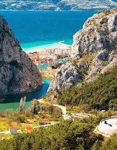
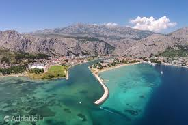
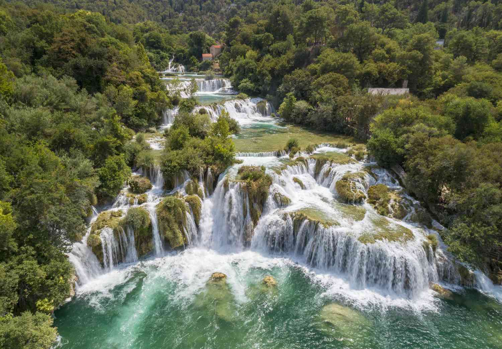
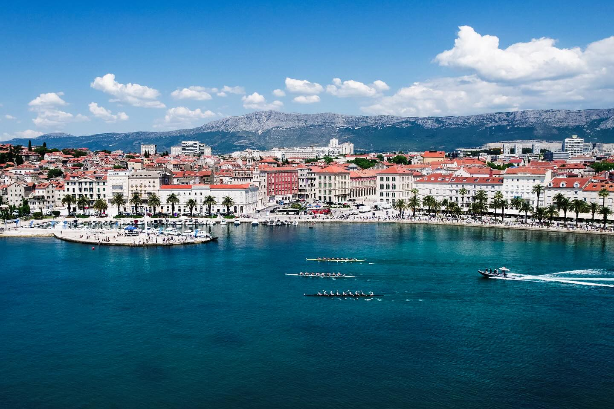
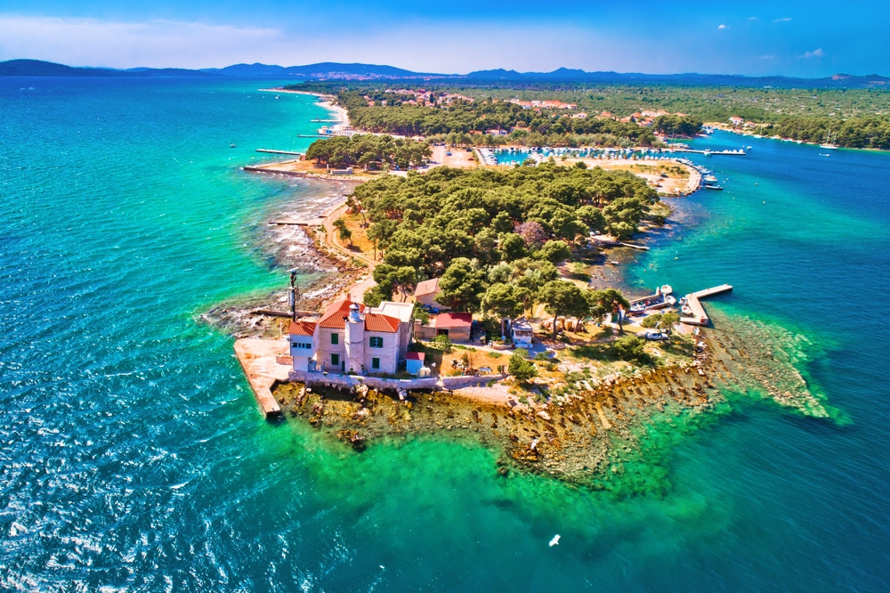

Žirokopter — ili autogyro — spaja slobodu helikoptera i eleganciju aviona u jedinstveno iskustvo letenja. Za razliku od helikoptera, rotor žirokoptera nije pokretan motorom, već se slobodno okreće zahvaljujući struji zraka.
To znači da čak i ako motor prestane raditi, žirokopter ne pada, već sigurno klizi prema zemlji zahvaljujući prirodnom fenomenu koji se zove autorotacija.
Zbog toga se žirokopteri diljem svijeta smatraju jednom od najsigurnijih letjelica ikada proizvedenih.
Lete mirno, stabilno i predvidivo — čak i u vjetrovitim uvjetima — dok putnicima pružaju nevjerojatno čist i otvoren pogled na krajolik.
Upravo ta kombinacija sigurnosti, slobode i pogleda bez prepreka čini svaki let s Horizon Airs Split posebnim iskustvom koje ćete pamtiti zauvijek.


✉
Najsigurnija letjelica
Autorotacija = sigurno slijetanje uvijek
⛰
300-600m visine
Savršen pogled na Dalmaciju
✈
Licencirani piloti
ULPL(GYR) dozvola, Aeroklub GYRO-CRO
✅
HACZ / EASA
Svi letovi prema europskim standardima
Cijene letova
Jednostavan cjenik — bez skrivenih troškova
Letovi kraći od 1 sata
5 €
po minuti
NAJPOPULARNIJE
Let od 1 sata
250 €
po osobi
Let od 2 sata
470 €
po osobi
U cijenu su uključeni svi troškovi letenja, oprema i komunikacija s pilotom.
GoPro snimanje: 20 € po snimci • Besplatno za letove dulje od 90 minuta.
Naše ture
Odaberite svoju avanturu — morske rute, planinske panorame ili letove iz Sinja
Polazak: Split Luka — Letovi iznad otoka i obale
15 min75 €
Split Skyline Flight
Kratak, ali nezaboravan let koji pokazuje Split iz najposebnijeg kuta — iz zraka. Dok žirokopter uzlijeće iznad trajektne luke, otkriva se panoramski pogled na Rivu, Dioklecijanovu palaču i Marjan.
Split → Marjan → Kaštelanski zaljev → Split
"Nikad nisam mislila da će Split izgledati tako drugačije odozgo!" — Ana Kovačević, Zagreb

30 min150 €
Otok i Grad
Ova tura vodi vas iznad Splita, Čiova i Trogira — tri dragulja Dalmacije. U svega pola sata preletjet ćete kulturne simbole Jadrana i doživjeti kontrast starog kamenog grada i plavetnila mora.
Split → Marjan → Čiovo → Trogir (UNESCO) → Split
"Prelijepo iskustvo! Vidio sam Trogir, Čiovo i Split iz zraka u samo pola sata." — Luca Ferraro, Italija
45 min225 €
Tri otoka: Brač – Šolta – Blue Lagoon
Spektakularan panoramski let iznad tri otoka pruža pogled na tirkizne lagune, maslinike i skrivene uvale. Nakon preleta nad Zlatnim ratom na Braču, let se nastavlja prema Šolti i kristalno čistim vodama Blue Lagoona.
Split → Splitska vrata → Brač (Zlatni rat) → Šolta → Blue Lagoon → Čiovo → Split
"Let iznad tri otoka bio je čista poezija. Najviše me oduševila Blue Lagoon!" — Martina Perić, turistički vodič
60 min250 €
Zlatni Krug Dalmacije
Najpopularnija morska ruta Horizon Airsa, koja spaja sve najpoznatije ljepote srednje Dalmacije. Letite iznad Brača, Hvara, Paklenih otoka i Šolte uz pogled koji oduzima dah.
"Ovo je moj san s Jadrana. Vidjeti Hvar, Brač i Šoltu u jednom letu bilo je nešto posebno." — David Müller, Njemačka
90 min375 €
Velika Dalmatinska Simfonija
Jedinstven let koji povezuje Brač, Hvar, Vis i Paklene otoke u savršenom ritmu mora i neba. Tijekom 90 minuta svjedočit ćete najljepšim panoramama otoka i zaljeva.
"Najromantičniji trenutak mog ljeta! Let iznad Visa i Paklenih otoka dok sunce zalazi..." — Ema Jukić, Split
120 min470 €
Kraljevski let Jadranom
Najduži i najluksuzniji morski izlet. Ruta vodi iz Splita prema Braču, Hvaru, Visu i Biševu s preletom iznad čuvene Modre špilje. Prava sinfonija plavetnila, svjetlosti i tišine.
Split → Zlatni rat → Hvar → Pakleni → Vis → Stiniva → Biševo → Šolta → Blue Lagoon → Split
"Letjeli smo iznad Brača, Hvara, Biševa i Paklenih otoka — nevjerojatan doživljaj." — Jean-Paul Laurent, Francuska

120 min • NOVA TURA470 €
Ekskluzivni let na Kornate
Polazak iz Splita i let iznad Brača, Šolte i Primoštena vodi vas do jednog od najimpresivnijih nacionalnih parkova Hrvatske — Kornata. Iz zraka se otkriva veličanstveni mozaik od preko 80 otoka i hridi.
"Let na Kornate bio je čisto savršenstvo! Pogled na stotine otoka iz zraka oduzima dah." — Thomas Becker, Njemačka
Polazak: Split — Letovi prema unutrašnjosti Dalmacije

35 min175 €
Cetinski Kanjon
Let iznad smaragdne rijeke Cetine otkriva njezin veličanstveni kanjon koji vijuga kroz kamen i zelenilo. Savršen izlet za ljubitelje prirode i tišine.
Split → Sinj → Kanjon Cetine → Split
"Let iznad Cetine je nešto što svatko mora doživjeti. Rijeka izgleda kao zmija od stakla." — Peter Novak, Slovenija

45 min225 €
Mosor & Omiška Klisura
Panoramski let koji spaja planine i more u jednom pogledu. Vidjet ćete veličanstvene stijene Mosora, Omišku klisuru i ušće Cetine u more.
Split → Mosor → Omiš → Split
"Vidjeti Mosor i Omiš iz zraka bilo je kao gledati vlastite planinarske staze s druge strane svijeta." — Katarina Marinić, planinarka
60 min250 €
Od Mora do Izvora
Let započinje iznad Splita i završava iznad izvora rijeke Cetine, poznatog kao "Oko zemlje". Ova ruta simbolizira put života — od mora do izvora, od plavetnila do zelenila.
Split → Klis → Sinj → Izvor Cetine → Omiš → Split
"Fenomenalan osjećaj! Počneš uz more, a završiš iznad izvora Cetine." — Mate Rimac, Dugopolje
90 min375 €
Green Heart of Dalmatia
Let iznad Sinja, Peruće i obronaka Dinare pruža pogled na najzeleniji dio Dalmacije. Savršena tura za one koji traže spokoj i duboku povezanost s prostorom.
"Nikada nisam vidjela toliko zelenila u Dalmaciji! Let iznad Sinja i Peruće je meditacija." — Maria Lopez, Španjolska
120 min470 €
Dalmatinska Eko Ekspedicija
Najduža i najraznovrsnija planinska tura vodi vas preko Knina, Dinare, Krčića i Peruće. Let koji otkriva geološke, povijesne i prirodne dragulje Dalmacije.
"Ovaj let je pravi eko-dragulj. Dinara, Knin i Krčić slap — kao dokumentarac uživo." — Ivan Pavlović, biolog
Polazak: Aerodrom Piket, Sinj — Letovi iz srca Dalmatinske zagore
15 min75 €
Sinjska Panorama
Let iznad Sinjskog polja i Tvrđave Kamičak nudi jedinstven pogled na Alkarski grad i dolinu Cetine. Savršen za kratko, ali dojmljivo iskustvo leta iznad zavičaja.
Piket → Tvrđava Kamičak → Sinjsko polje → Piket
"Napokon sam vidjela Sinj iz zraka! Polje, Tvrđava Kamičak i Cetina izgledaju bajkovito." — Jelena Vučković, Sinj
30 min150 €
Izvor Života
Ruta koja vodi iz Sinja do mitskog izvora Cetine, "Oka zemlje". Ova tura simbolizira povezanost čovjeka i prirode — tiha, emotivna i nezaboravna.
Piket → Izvor Cetine (Oko zemlje) → Peruća → Piket
"Let do Oka zemlje je nešto posebno. Ta tirkizna boja je nestvarna." — Tomislav Petrić, agronom
45 min225 €
Mosor & Cetina
Iz Sinja prema Omišu, kroz dolinu i kanjon Cetine — spoj planine i mora u jednom letu. Idealna tura za one koji žele vidjeti srce Dalmacije s visine.
Piket → Dugopolje/Mosor → Omiš → Trilj → Piket
"Prelet iz Sinja do Omiša kroz dolinu Cetine — apsolutno čarobno!" — Francesca Rossi, Italija
60 min250 €
More i Planine Dalmacije
Jedna od najljepših ruta Horizon Airsa — pogled na Dinaru, Mosor, Šoltu i Brač. Let koji u sat vremena prikazuje cijelu Dalmaciju u jednom dahu.
"Let koji spaja izvor i ušće Cetine! Kao lekcija iz geografije, ali živa i emotivna." — Sandra Delić, profesorica
120 min470 €
Dalmatinski Epic Flight
Najveći let koji spaja planine, otoke, rijeke i obalu u jedno epsko iskustvo. Od Sinja do mora i natrag — ovo nije samo let, ovo je priča o Dalmaciji viđena iz neba.
"Ovo je let života. Od Dinare do mora, preko otoka i natrag — čista poezija." — Mark Johnson, SAD
EKSKLUZIVNA TURA
Modra špilja iz zraka
Doživite jedno od najljepših čuda Jadrana iz potpuno nove perspektive — iz zraka!
Polazak iz Splita, uz spektakularan let iznad Bračkog kanala, otoka Hvara, paklenskih otoka Visa i Biševa, završava nezaboravnim prizorom Modre špilje, svjetski poznate po svojoj čarobnoj plavoj svjetlosti.
💰260 € po osobi
⏲Oko 60 minuta (uključujući polijetanje i povratak)
📍Polazak: Split Luka (amfibijski žirokopter)
⭐
"Best way to see the Blue Cave — no crowds, pure freedom!"
I'm from Colorado and thought I'd seen it all — but this gyrocopter flight from Split with Horizon Airs was on another level. We flew over the islands and passed hundreds of boats slowly heading toward the Blue Cave, while we just glided above them and got there first — no crowds, just stunning views.
The pilot was professional and made me feel completely safe the whole time. Honestly, it's the most unforgettable thing I've done in Croatia!
"Nikad nisam mislila da će Split izgledati tako drugačije odozgo! Riva, Marjan i cijeli grad kao na dlanu."
Ana Kovačević
28, arhitektica iz Zagreba • 15 min let
★★★★★
"Ovo je moj san s Jadrana. Vidjeti Hvar, Brač i Šoltu u jednom letu bilo je nešto posebno. Savršeno tempirano!"
David Müller
42, inženjer iz Njemačke • 60 min let
★★★★★
"Najromantičniji trenutak mog ljeta! Let iznad Visa i Paklenih otoka dok sunce zalazi... Boje, mir, i osjećaj da vrijeme stoji."
Ema Jukić
26, influencerica iz Splita • 90 min let
★★★★★
"Letjeli smo iznad Brača, Hvara, Biševa i Paklenih otoka — nevjerojatan doživljaj. Kao bivši pilot, mogu reći da je let izveden besprijekorno."
Jean-Paul Laurent
54, pilot u mirovini iz Francuske • 120 min let
★★★★★
"Let iznad Cetine je nešto što svatko mora doživjeti. Rijeka izgleda kao zmija od stakla. Pilot mi je čak pokazao gdje se održava Sinjska alka!"
Peter Novak
39, Slovenac • 35 min planinski let
★★★★★
"Ovo je let života. Od Dinare do mora, preko otoka i natrag — čista poezija. Pilot i ekipa su pravi ambasadori Dalmacije. 10/10!"
Mark Johnson
44, pilot amater iz SAD-a • 120 min iz Sinja
Galerija
Dalmacija iz ptičje perspektive



Najčešća pitanja
Sve što trebate znati prije leta
Općenita pitanja
Žirokopter (autogyro) je zrakoplov koji kombinira najbolje karakteristike helikoptera i aviona. Rotor se ne pokreće motorom, već se slobodno okreće u zraku, što omogućuje izuzetno stabilan i siguran let. Zahvaljujući principu autorotacije, žirokopter ne može „pasti" čak ni u slučaju kvara motora — što ga čini jednom od najsigurnijih letjelica na svijetu.
Vrlo siguran. Žirokopter leti stabilno, mirno i kontrolirano, a u slučaju kvara motora rotor nastavlja slobodno rotirati, omogućujući sigurno i mekano slijetanje. Upravo zato se koristi i u školama letenja i zračnim patrolama diljem svijeta.
Žirokopter ima dva mjesta — jedno za pilota i jedno za putnika. Za parove ili grupe, Horizon Airs Split nudi mogućnost usklađenih letova u paru pomoću flote žirokoptera, tako da možete letjeti jedan uz drugog i dijeliti doživljaj iz zraka.
Najčešće letimo između 300 i 600 metara visine, ovisno o ruti i uvjetima, što omogućuje savršen pogled na Dalmaciju i njene otoke.
Svi letovi obavljaju se uz licencirane pilote s ULPL(GYR) dozvolom, članove Aerokluba GYRO-CRO, uz striktno poštivanje svih sigurnosnih standarda Hrvatske agencije za civilno zrakoplovstvo (HACZ).
Rezervacije i plaćanje
Let možete rezervirati direktno putem naše web stranice. Nakon što odaberete termin i rutu, primit ćete potvrdu i upute za uplatu akontacije.
Prihvaćamo sve načine plaćanja — gotovinu, Mastercard, Visa, Revolut, Aircash, Bitcoin i druge popularne oblike digitalnog plaćanja.
Da. Rezervaciju možete otkazati ili promijeniti najkasnije 72 sata prije termina, bez ikakvih troškova. U tom slučaju, akontacija se u potpunosti vraća. Za otkazivanja unutar 72 sata, akontacija se zadržava radi pokrivanja troškova pripreme.
Ako vremenski uvjeti nisu pogodni, let se odgađa za prvi slobodan termin koji vama odgovara. Ako novi termin ne možete prihvatiti, akontacija se u cijelosti vraća.
Tijek leta i iskustvo
Ne, nije potrebno nikakvo iskustvo. Pilot vodi cijeli let i objasnit će vam sve prije polijetanja. Vaš zadatak je samo — uživati u pogledu!
Let se može snimati od strane putnika, ali to nije preporučljivo zbog rizika od gubitka mobitela ili druge opreme tijekom leta. Zato Horizon Airs Split nudi profesionalno snimanje s GoPro Hero i GoPro 360 kamerama po cijeni od 20 € po snimci, dok je snimanje besplatno za sve letove dulje od 90 minuta.
Da, iz sigurnosnih razloga maksimalna težina putnika je 115 kg.
Ponesite sunčane naočale i laganu jaknu — kaciga, komunikacijski sustav i sigurnosna oprema osigurani su na licu mjesta.
Posebne usluge
Da, nudimo personalizirane poklon-vaučere s trajanjem od 12 mjeseci — idealne za rođendane, godišnjice ili poslovne poklone.
Da, uz standardne panoramske rute nudimo romantične letove u paru, foto i video letove te business promo letove za marketinške snimke i evente. Za parove organiziramo sinkronizirane letove flote kako biste zajedno uživali u nebeskom doživljaju.
Sigurnost i licence
Svi letovi se obavljaju u skladu s propisima Hrvatske agencije za civilno zrakoplovstvo (HACZ) i Europske agencije za sigurnost zračnog prometa (EASA).
Žirokopteri se redovito servisiraju prema uputama proizvođača (Autogyro MTO 914, motor Rotax 914), uz redovne 25-, 100-, 200- i 500-satne preglede. Svi dijelovi, ulja i komponente su originalni i zamjenjuju se isključivo prema certificiranim standardima.
Rezervirajte svoj let
Ispunite obrazac i javit ćemo vam se u najkraćem roku